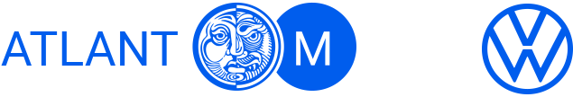
Международный автомобильный холдинг „Атлант-М“ торгует 10 автомобильными марками, в том числе Volkswagen. Для данного бренда нужно было сделать рестайлинг и привести все сайты сети к шестому поколению.
Рестайлинг сайтов VW
к шестому поколению
В конце 2019 года пришло время обновить стиль всех сайтов белорусской сети дилеров VW.
Сама система работала надежно и постоянно обновлялась, поэтому основной объем работ был не на переработку механик сайта, а на рестайлинг имеющихся страниц. Обновить все сайты требовалось всего за три месяца.
Посмотреть связанный кейс
Разработка сайта Volkswagen.by
и сайтов регионов
и сайтов регионов
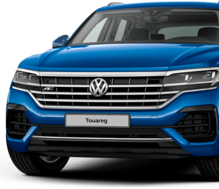
Готовим дизайн
Дизайн-гайды VW разрабатываются в Германии, а нашей задачей было придерживаться официальной документации. Отступы, кнопки, сетка, шрифты и размеры должны совпадать с общемировым стандартом бренда
Так как это уже всё было собрано и были уже реализованные сайты-образцы, шаблоны мы готовили сразу в HTML.
Вы можете посмотреть, как выглядит процесс верстки в реальном времени. Этот функционал обеспечил наш партнер:
До рестайлинга
После рестайлинга
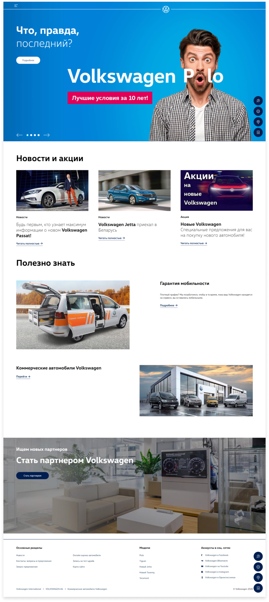Сборка остальных шаблонов сайта
17 макетов
Структура проекта не отличалась, но требовалось переработать навигацию, переделать все макеты, все шаблоны страниц, пересобрать все заготовки для контрукторов форм.
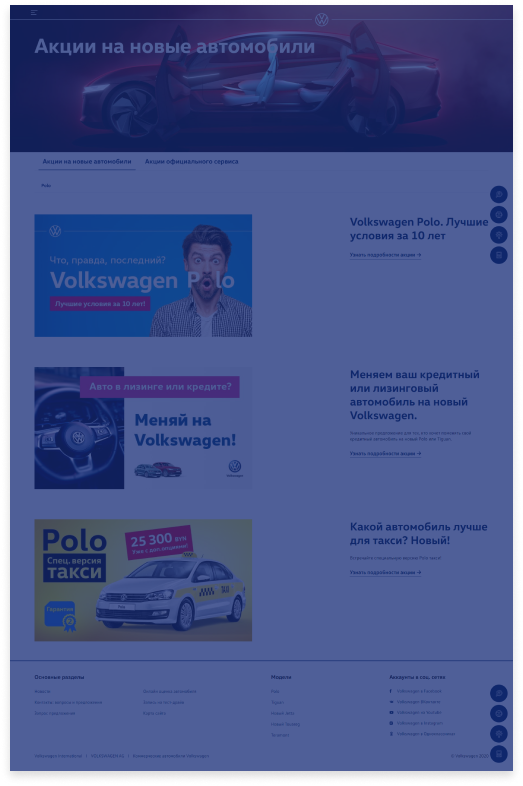
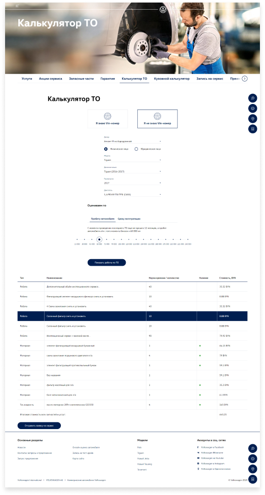
 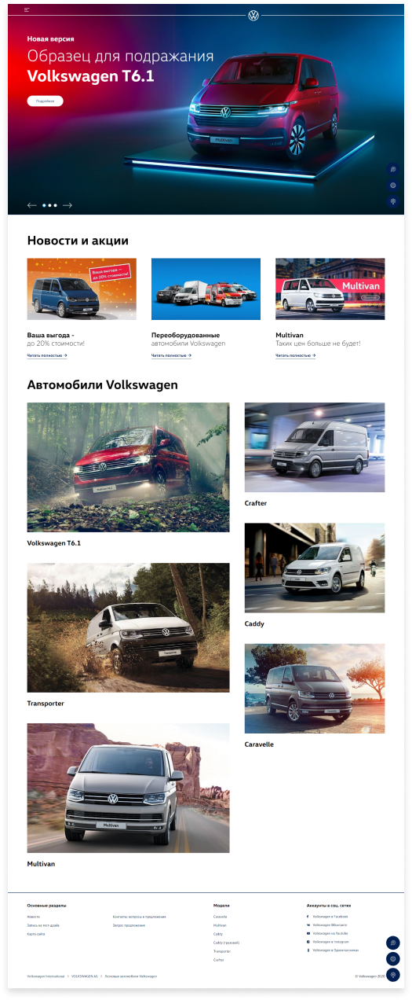
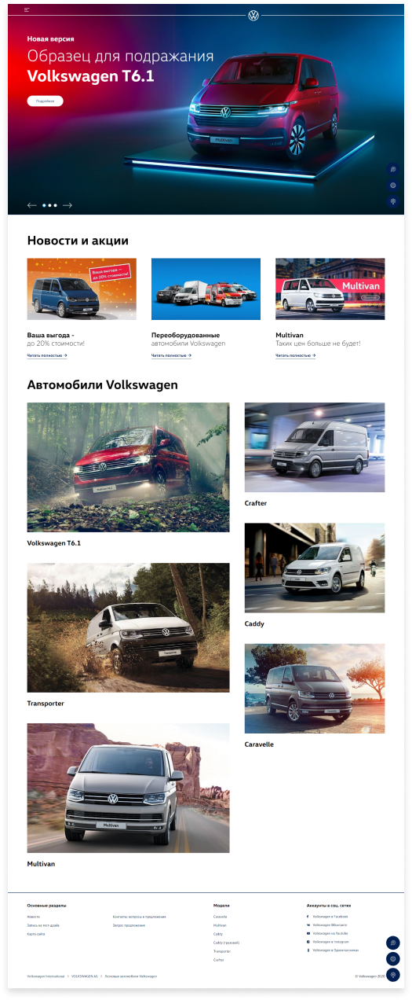
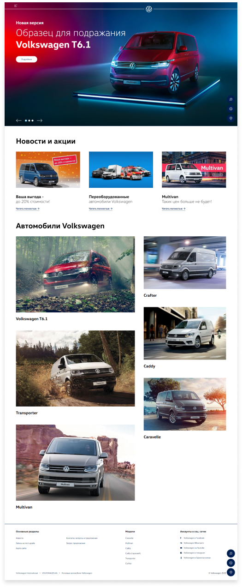
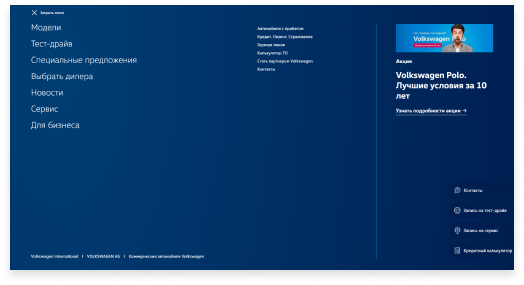
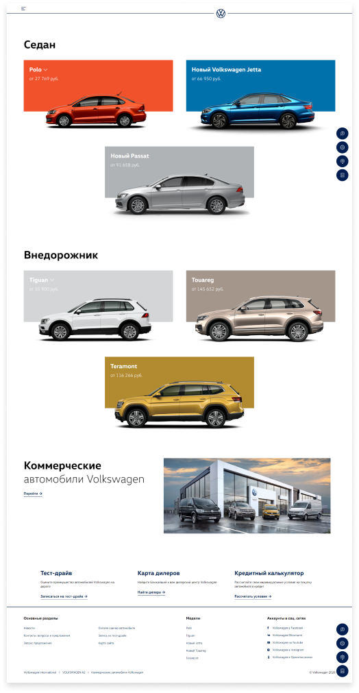
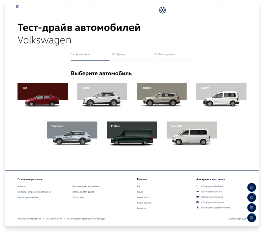
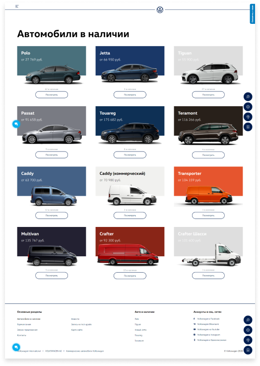
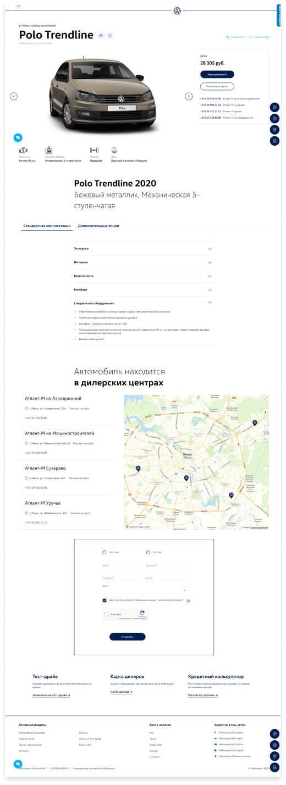
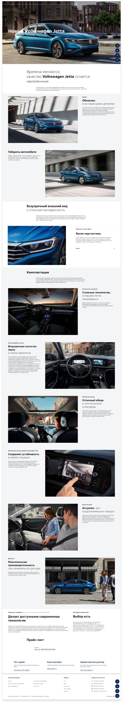
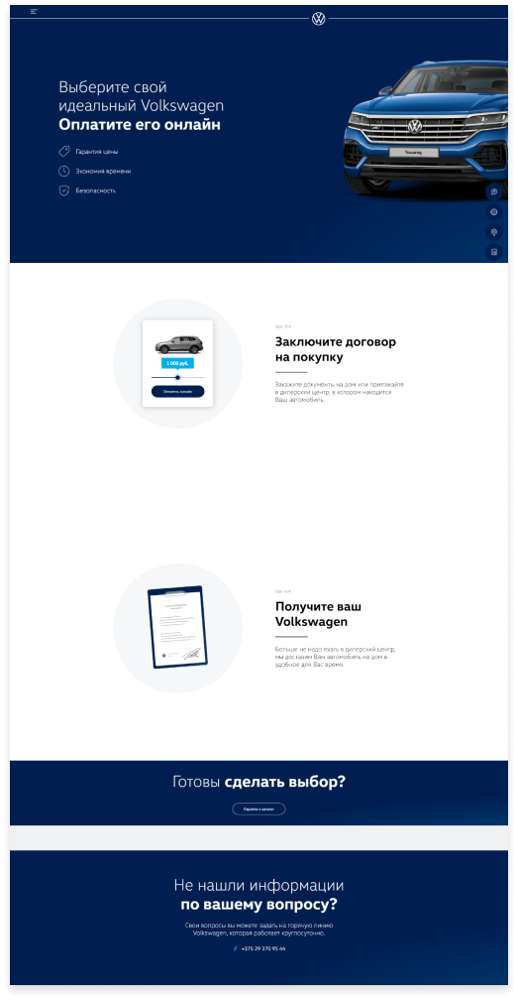
Оптимизация архитектуры минских дилеров
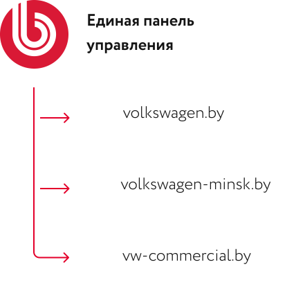
Изначально сайты минских дилеров, включая коммчерские автомобили, разрабатывались как отдельные платформы. Так как у минских дилеров много общего, например каталоги автомобилей, интеграция с SAP, мы объеденили эти сайты под одну платформу через механизм мультисайтовости 1С-Битрикс.
Команда проекта
Руководитель проекта
Юра Иов
PHP разработчик
Эдгар Соловьев
Команда клиента
Павел Филипенок
Дизайн
Сергей Шишпор
Верстка
Богдан Маделык